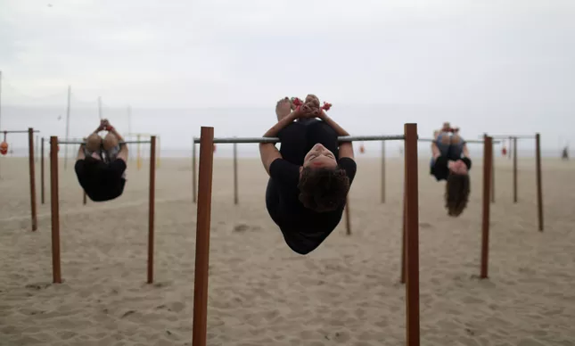
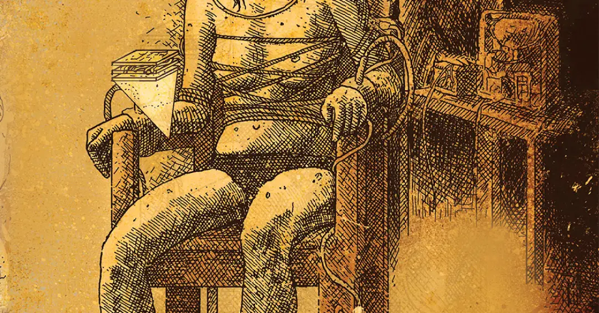
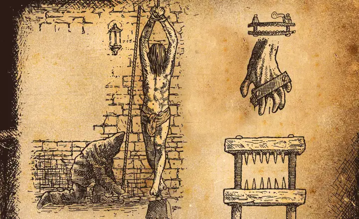
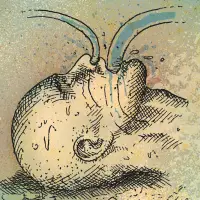
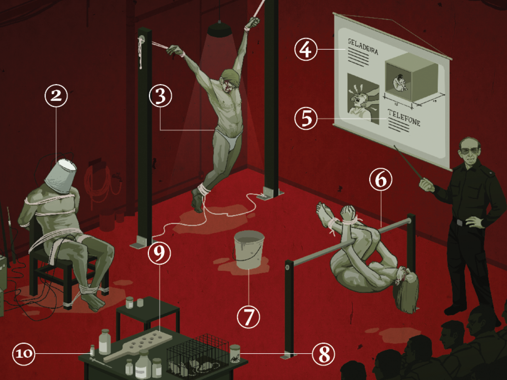

DITADURA MILITAR NO BRASIL
A ditadura militar no Brasil (1964-1985) utilizou a tortura de forma sistemática como política de repressão, aplicada principalmente nos órgãos militares de defesa interna, como o DOI-CODI (Destacamentos de Operações de Informação - Centros de Operações de Defesa Interna).
Principais Métodos de Tortura Físicos
- Pau de Arara: Este é um dos métodos mais simbólicos e cruéis. A vítima era suspensa por uma barra de ferro (o "pau de arara") que atravessava seus punhos amarrados e a dobra dos joelhos. Pendurada entre duas mesas ou cavaletes, a posição causava dores excruciantes e facilitava a aplicação de outros suplícios, como choques elétricos e palmatória.
- Choque Elétrico (Gênero/Maricota/Pimentinha/Brigitte Bardot/Pianola): Descargas elétricas eram aplicadas em diversas partes do corpo, sendo as áreas mais sensíveis as preferidas, como genitais, ânus, mamilos, boca e ouvidos.
- Cadeira do Dragão: A vítima era sentada nua em uma cadeira revestida de zinco, que potencializava a distribuição de choques elétricos pelo corpo. Em alguns casos, a vítima era molhada com água e forçada a comer sal para intensificar o efeito do choque.
- Afogamento: Consistia em mergulhar a cabeça do preso em recipientes com água (às vezes contendo urina ou fezes) até o limite da asfixia, ou derramar água no nariz da vítima.
- Crucificação: A vítima era suspensa pelos pulsos ou pés, amarrados a ganchos fixados no teto ou paredes, potencializando a dor e a exaustão.
- Telefone:Consistia em aplicar um golpe violento simultaneamente nos dois ouvidos da vítima com as mãos em concha, o que frequentemente resultava no rompimento dos tímpanos e perda de audição.
- Palmatória:Aplicação de pancadas nas mãos ou outras partes do corpo, muitas vezes enquanto o preso estava no pau de arara.
- Violência Sexual:Abusos sexuais, estupros, nudez forçada e ameaças eram práticas comuns, especialmente contra mulheres.




